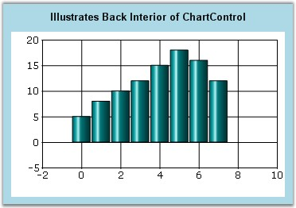
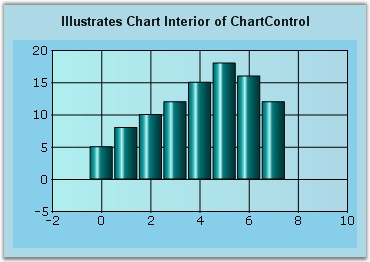

Essential Chart lets you customize the background colors of different portions of the chart.
Outside the Chart Area
Use the BackInterior property of the chart to customize the background of the chart that is outside the chart area. This is usually where the legend and the chart title get rendered. By default it is set to White color.
|
[C#]
this.chartControl1.BackInterior = new Syncfusion.Drawing.BrushInfo(System.Drawing.Color.LightBlue); |
|
[VB.NET]
Me.chartControl1.BackInterior = New Syncfusion.Drawing.BrushInfo(System.Drawing.Color.LightBlue) |

Figure 313: BackInterior = "LightBlue"
Inside the Plot Area
Use the ChartArea.BackInterior to customize the background of the rectangular region where the points are plotted.
|
[C#]
this.chartControl1.ChartArea.BackInterior = new Syncfusion.Drawing.BrushInfo(System.Drawing.Color.SkyBlue); |
|
[VB.NET]
Me.chartControl1.ChartArea.BackInterior = New Syncfusion.Drawing.BrushInfo(System.Drawing.Color.SkyBlue) |

Figure 314: ChartArea.BackInterior = "SkyBlue"
Inside the Chart Area
Use the ChartInterior property of the chart to customize the background of the chart area. By default it is set to White color.
|
[C#]
this.chartControl1.ChartInterior = new Syncfusion.Drawing.BrushInfo(Syncfusion.Drawing.GradientStyle.Horizontal, System.Drawing.Color.PaleTurquoise, System.Drawing.Color.LightBlue); |
|
[VB.NET]
this.chartControl1.ChartInterior = New Syncfusion.Drawing.BrushInfo(Syncfusion.Drawing.GradientStyle.Horizontal, System.Drawing.Color.PaleTurquoise, System.Drawing.Color.LightBlue) |

Figure 315: ChartInterior = "LightBlue"